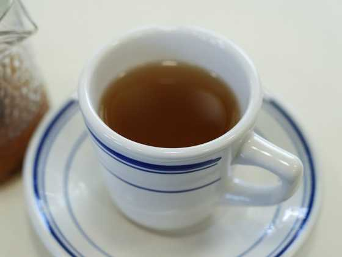
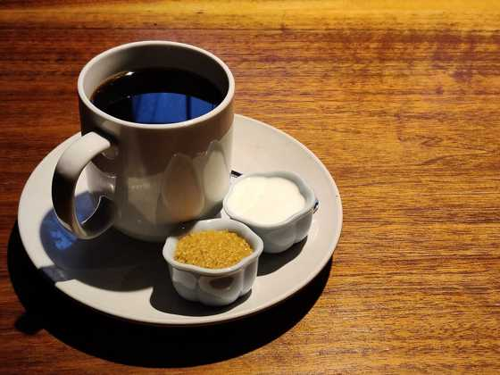
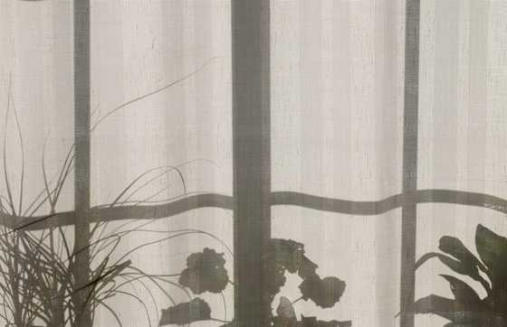
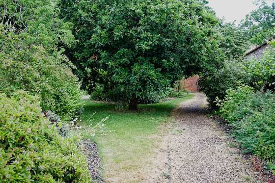
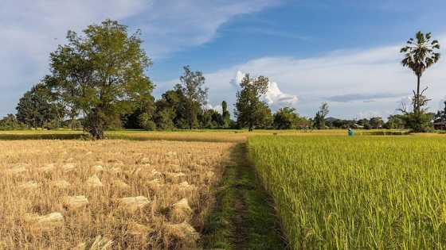
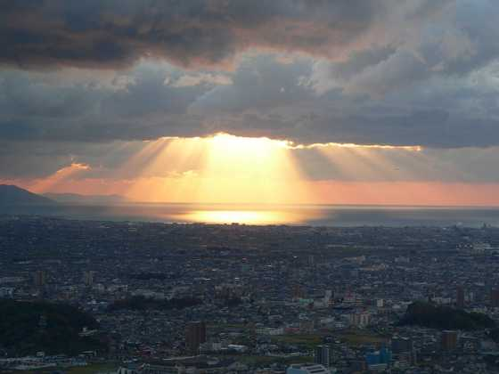

宇和島市津島町
倉庫のなかの、手づくりのひと息。
倉庫の一角に、木のぬくもりと手づくりの温かさがあるカフェ。地元の野菜を使ったごはんと、自家製のケーキでひと休みできるお店です。(このページは制作見本です)

※掲載している写真はフリー素材のイメージ写真で、店舗の実際の様子ではありません。他地域で撮影されたものや、撮影地が不明なものを含みます。各写真の下に作者とライセンスを記載しています。
メニュー
紹介記事(2025年4月時点)によると、次のようなメニューがあるとされています。最新の内容・価格・提供時間は準備中です。




口コミ
以下は制作側が作成した「イメージ例」で、実際のお客様の声ではありません。
イメージ例
倉庫の中とは思えないほど、木の感じがやさしくて落ち着きました。
イメージ例
お昼ごはんのあとに、ケーキまでゆっくり楽しめました。
イメージ例
小さな子どもと一緒でも、気兼ねなく過ごせそうな雰囲気でした。


お店について
「倉庫カフェ とんとん」は、津島町の水野建設の倉庫の中にあるカフェです。倉庫の一角でありながら、天然木のカウンターや木製のパーテーションなど、木の風合いを生かした手づくりの温もりのある空間と紹介されています。
キッズスペースがあり、小さなお子さま連れでも利用しやすいカフェとして紹介されています。近くには南楽園や古い町並みの残る岩松があり、お出かけの途中にも立ち寄れる場所です。
店名の由来やオーナーの想いは確認できていないため、掲載していません。「倉庫のなかの、手づくりのひと息」というコンセプトは制作側のイメージです。




アクセス
- 住所
- 〒798-3303 愛媛県宇和島市津島町近家甲22
- 電話
- 準備中
- 営業時間
- 準備中
- 定休日
- 準備中
- @souko.cafe.tonton